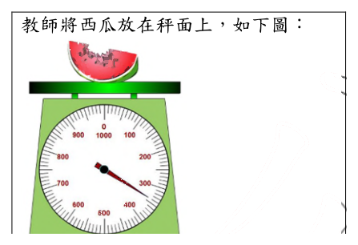
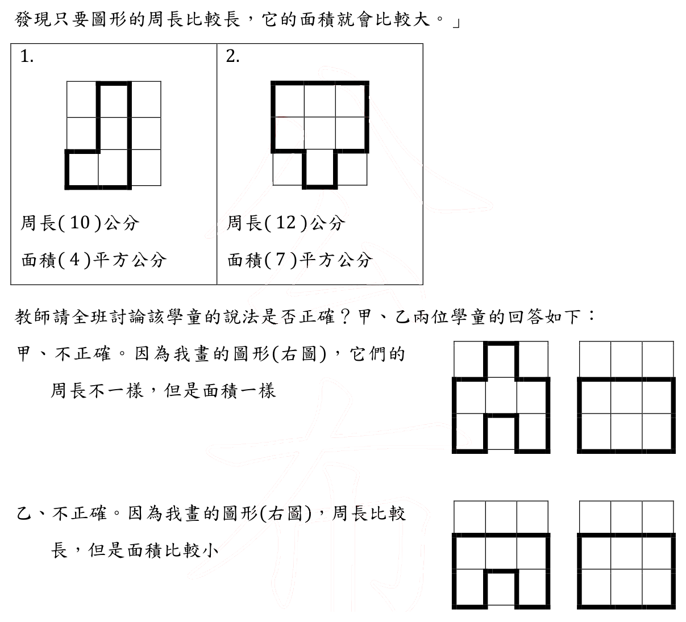
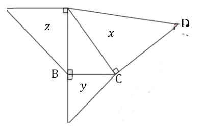
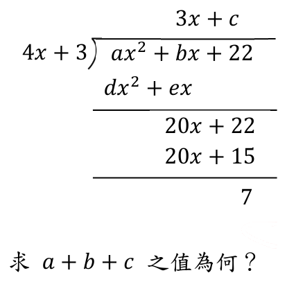
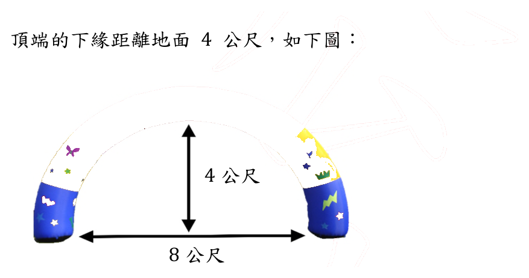

113 年教師檢定國小・數學能力測驗試題與答案
這一頁是民國 113 年教師檢定國小・數學能力測驗的整份歷屆試題，共 26 題，題目與標準答案出自教育部教師資格考試歷屆試題（受託國立臺灣師範大學心理與教育測驗研究發展中心），其中 26 題附有詳解。以下逐題列出題幹、選項與答案；要計時作答或記錄成績，請用線上練習。
教育部原始場次代碼：tqa11330
線上作答這一科 →
全部 26 題
第 1 題
有一布題：「3條巧克力平分給5個人，每個人可以分到幾條巧克力？」問此一布題可以做為下列何者的啟蒙教學？
- （A）等分除
- （B）包含除
- （C）分數的基本概念
- （D）以分數表示兩數相除的結果
答案：（D）
詳解與考點
正解：「3條巧克力平分給5個人，每個人可以分到幾條」屬於等分除情境（已知總量3與等分份數5，求每份多少），但因被除數3小於除數5，商無法以整數表示，必須將每人分得的量寫成分數形式，即3÷5=3/5條。這種「除數大於被除數、除不盡、須改以分數表示商」的布題，正是國小數學課程中用來啟蒙「以分數表示兩數相除之結果」（除法的商可以是分數）此一概念的典型情境，故選（D）。
A：等分除是指已知總量與等分份數、求每份數量的除法情境（如12顆糖平分給4人，每人3顆）；此概念在學生學習本題之前即已透過「除得盡」的整數情境習得，本題的教學重點並非等分除概念本身，而是等分除「除不盡時如何用分數表示商」的延伸，若答此選項即忽略了本題真正欲啟蒙的新概念。
B：包含除是指求「總量中包含幾個某量」的除法情境（如15顆糖，每人分3顆，可分給幾人），其問題結構與題幹「平分給5個人、求每人分到多少」的等分除敘述並不相符，故不適用。
C：分數的基本概念通常指部分與整體間的分割關係（如一個蛋糕平分3份、取其中1份即為1/3），著重的是「切割與命名」，並未涉及除法運算與「商」的意義；本題是以除法情境（3條分給5人）作為布題脈絡，教學目的在銜接除法與分數的關係，而非單純教授分數切割的基本概念，兩者切入點不同。
本題考點：除法情境與分數表示式之間的銜接教學。當等分除的除數大於被除數、無法得出整數商時，須引入「以分數表示兩數相除結果」的概念（即a÷b=a/b）；解題關鍵在於區辨題幹布題究竟是要鞏固既有的整數等分除概念，還是要藉「除不盡」的情境啟蒙除法商可為分數的新概念。
第 2 題
在「速率」教學中，教師提供四位學童跑步的時間和距離數據如下： 〔表格請至練習頁檢視〕 下列哪個提問可以引出「距離相同，花的時間越少就跑得越快」的概念？
- （A）甲生和乙生，誰跑得比較快？
- （B）甲生和丙生，誰跑得比較快？
- （C）乙生和丙生，誰跑得比較快？
- （D）丙生和丁生，誰跑得比較快？
答案：（C）
詳解與考點
正解：四位學童的時間與距離分別為：甲20秒130公尺、乙18秒140公尺、丙20秒140公尺、丁11秒66公尺。要引出「距離相同，花的時間越少就跑得越快」的概念，必須挑選「距離相同、時間不同」的兩人進行比較，使變因單純化為時間。乙與丙的距離均為140公尺（距離相同），時間分別為18秒與20秒（時間不同），比較兩者可讓學童發現：距離一樣時，花費時間較少者（乙，18秒）跑得較快，正好對應題目所求的概念，故選（C）。
A：甲和乙的時間（20秒、18秒）與距離（130公尺、140公尺）皆不相同，屬於時間與距離同時變化的雙變項情境，無法單純歸因於時間對速度的影響，無法引出題目所求的概念。
B：甲和丙的時間相同（皆20秒）、距離不同（130公尺、140公尺），這組比較能引出的是「時間相同，距離越長跑得越快」的概念，方向與題目所求（距離相同、比較時間）不同。
D：丙和丁的時間（20秒、11秒）與距離（140公尺、66公尺）同樣兩者皆不同，屬雙變項情境，無法單獨控制距離變項以凸顯時間對速度的影響，無法引出題目所求的概念。
本題考點：科學／數學探究中的控制變因設計。要凸顯某一變因（時間）對結果（速度）的影響，須挑選除該變因外其餘條件相同（距離相同）的比較組別，才能形成有效的對照；此為速率概念教學中常用的變因控制策略。
第 3 題
國小學童學習「圓周率」時，下列何者為必要的活動？
- （A）認識扇形
- （B）測量圓心角
- （C）測量圓周長
- （D）圓的切割重組
答案：（C）
詳解與考點
正解：圓周率是圓的周長與直徑的比值（約為3.14），國小學童建立此概念的必要活動，是實際測量多個大小不同圓形的圓周長與直徑，再計算兩者的比值，透過多次測量與計算，歸納出「不論圓的大小，周長與直徑的比值恆為一個固定常數」，這個「測量圓周長」的操作，正是認識圓周率不可或缺的活動，故選（C）。
A：認識扇形涉及圓心角、弧與扇形面積等後續進階概念，是在理解圓周率、圓面積等基礎之後才會延伸學習的內容，並非建立圓周率概念本身所必要。
B：測量圓心角同樣屬於扇形、弧長等進階單元的操作，圓心角的測量與「周長對直徑的比值為固定常數」這項圓周率的核心概念沒有直接關聯，故非必要活動。
D：圓的切割重組是國小教學中用來推導「圓面積公式」的典型活動——將圓等分切割後重新拼組成近似平行四邊形，導出面積等於半徑乘以半徑乘以圓周率；其教學目標是求面積公式，而非認識圓周率本身，兩者目的不同，故非本題所問的必要活動。
本題考點：圓周率（π）概念的建立方式與圓面積公式的推導方式之區辨。圓周率的建立仰賴「測量周長與直徑並計算比值」的歸納活動；圓面積公式的推導則仰賴「切割重組」的操作活動，兩者分屬不同單元目標，作答須先辨明題目問的是圓周率還是圓面積。
第 4 題
關於「0」的意義，有三個敘述如下： 甲、0可代表「原點」，例如數線上的刻度 0 乙、0可代表「沒有」，例如我有0枝筆，也就是我沒有筆 丙、0可代表位值中「空位」的概念，例如 102 中的 0 代表十位是空位 問哪些敘述正確？
- （A）只有甲、乙
- （B）只有甲、丙
- （C）只有乙、丙
- （D）甲、乙、丙
答案：（D）
詳解與考點
正解：甲、乙、丙三個敘述皆正確。甲、「0」可代表「原點」，例如在數線上以0為起始基準點，其後的正數與負數皆以此點為參照依據，這是0作為位置基準的意義；乙、「0」可代表「沒有」，例如「我有0枝筆」即表示筆的數量為零，這是0作為數量多寡（基數）的意義；丙、「0」可代表位值系統中的「空位」，例如102當中十位數字為0，表示該位置雖然存在、但數量為零，若省略這個0，102會誤寫成12而使位值錯亂，這是0在十進位記數系統中占位、以維持各數字正確位值的意義。三種意義分屬不同脈絡（度量起點、數量多寡、位值記數），彼此並不互斥，皆為國小數學課綱中「0」的正確詮釋，故三者皆正確，選（D）。
A（只有甲、乙）：僅承認甲、乙而未包含丙，但丙所述「0代表位值中空位」（如102的十位0）同樣是正確且獨立的意義，並非甲或乙所能涵蓋，遺漏丙使選項不完整。
B（只有甲、丙）：僅承認甲、丙而未包含乙，但乙所述「0代表沒有」（如0枝筆即沒有筆）是「0」最基本、最貼近生活經驗的數量意義，同樣正確，遺漏乙使選項不完整。
C（只有乙、丙）：僅承認乙、丙而未包含甲，但甲所述「0代表原點」（如數線上的刻度0）是數線與座標概念中0的重要意義，同樣正確，遺漏甲使選項不完整。
本題考點：「0」在國小數學中的多重意義——作為度量／座標系統的原點、作為數量的「沒有」（基數為零）、作為十進位位值系統中的占位符號（placeholder）。三者分屬不同的數學脈絡，彼此不互斥，作答時須逐一檢視每個敘述所依附的脈絡是否成立，而非預設「0」只能有單一種意義。
第 5 題
教師想要檢測學童是否有「小數計算受整數直式計算法則影響」的迷思概念,問下列哪個題目最為合適?
- （A）\(30.1 + 0.2\)
- （B）\(15.5 + 4.25\)
- （C）\(0.05 + 0.25\)
- （D）\(3.85 + 4.25\)
答案：（B）
詳解與考點
正解：「小數計算受整數直式計算法則影響」是指學童將整數直式加法「末位（右側）對齊」的規則，錯誤遷移到小數加法，取代應有的「小數點對齊」；此一錯誤只有在兩加數的小數位數不同時，才會使計算結果偏離正確答案──若小數位數相同，即使誤用右側對齊，因位數恰好一致，結果仍與小數點對齊相同，無法用來診斷。選項（B）15.5（小數1位）與4.25（小數2位）位數不同：正確作法先將15.5化為15.50，依小數點對齊得15.50+4.25=19.75；若學童誤用末位對齊直式相加，會得到不同於19.75的錯誤結果，兩種作法結果不同，足以有效診斷迷思是否存在，故選（B）。
A：（A）30.1與0.2皆為小數1位，位數相同，無論用小數點對齊或末位對齊直式排列，結果都相同（皆得30.3），學童即使有此迷思也不會答錯，無法診斷。
C：（C）0.05與0.25皆為小數2位，位數相同，兩種對齊方式結果一致（皆得0.30），同樣無法區分學童是否受整數直式法則影響。
D：（D）3.85與4.25皆為小數2位，位數相同，兩種對齊方式結果相同（皆得8.10），同樣不具診斷力。
本題考點：小數加減法的迷思概念診斷。核心原理是小數直式計算應依「小數點對齊」而非整數直式的「末位對齊」；出題時須選用小數位數不同的兩數，才能讓誤用整數法則的學童產生與正解不同的錯誤答案，藉此有效偵測迷思是否存在。
第 6 題
有一數學問題:「爸爸上午6時45分出門上班,下午8時回到家,問爸爸出門多久?」 某學童的算式紀錄如下: \[ \begin{array}{r@{\,}c@{}c@{}c@{}c@{}c} & \text{時} & \text{分} & & & \\ & \mathrm{8} & \mathrm{0} & & & \\ \cline{2-7} & \mathrm{-} & \mathrm{6} & \mathrm{45} & & \\ \cline{2-4} & \multicolumn{1}{l}{\mathrm{1}} & \multicolumn{1}{l}{55} & & & \\ \end{array} \] A: 1小時55分 有三個關於「時間」的概念: 甲、時與分的換算 乙、事件先後的判斷 丙、12時制和24時制的互換 針對該學童的錯誤解法,他缺乏上述哪些概念?
- （A）只有甲、乙
- （B）只有甲、丙
- （C）只有乙、丙
- （D）甲、乙、丙
答案：（B）
詳解與考點
正解：正確作法應先將下午8時換算為24時制的20時，再以到家時刻減出門時刻：20時00分－6時45分。分鐘不夠減，需向小時借位（1小時＝60分）：20時00分＝19時60分，60-45=15分，19-6=13小時，得13小時15分，才是爸爸出門的正確時間。該學童列式為「8時0分－6時45分＝1小時55分」：一來他直接以8時而非20時運算，顯示他不會把下午8時換算為24時制的20時，這是「12時制和24時制的互換」（丙）概念不足；二來觀察其借位過程，若依時分六十進位正確借位，應得8時0分＝7時60分，60-45=15，7-6=1，答案應為1小時15分，但該生得出1小時55分，可見他借位時誤以1小時＝100分（套用整數逢十進位的借位邏輯）處理：0分借位後變成100分，100-45=55，7-6=1，恰得1小時55分，顯示其將整數逢十進位規則誤用於時、分逢六十進位的換算，此為「時與分的換算」（甲）概念不足。至於列式方向，該生以回家時刻（8時0分）減出門時刻（6時45分），出門在先、回家在後的先後順序判斷並無錯誤，故「事件先後的判斷」（乙）並非其欠缺之概念。該生缺乏甲、丙兩概念，故選（B）。
A、C、D：（A）只有甲、乙，與（C）只有乙、丙，均誤將乙列為該生缺乏的概念——但由列式方向可知該生正確地以晚減早，並未犯此錯誤；（D）甲、乙、丙全部，則是把並未出錯的乙也一併計入，同樣高估了該生的錯誤範圍。三者的共同誤區在於：僅看到答案錯誤，便直覺地認為三項概念都可能有問題，而未仔細拆解列式的借位過程與換算是否分別出錯，才能準確定位錯誤出在甲與丙，而非乙。
本題考點：時間的六十進位概念與應用錯誤診斷。核心考點有二：一是時與分的六十進位換算（借位須以60分為單位，不可套用十進位邏輯）；二是12時制與24時制的互換（下午時刻須加12化為24時制才能與上午時刻直接相減）；診斷學童錯誤時，須將列式的方向（先後判斷）與運算（換算與借位）分開檢視，才能準確定位缺乏的概念。
第 7 題
教師以兩個底面積不同的圓柱杯子裝水來比較水量。問下列哪一組水量的比較,可以診斷出學童是否有「水的高度越高,水量就越多」的迷思概念?
- （A）底面積 30 平方公分水高 5 公分、底面積 20 平方公分水高 8 公分
- （B）底面積 30 平方公分水高 5 公分、底面積 20 平方公分水高 4 公分
- （C）底面積 30 平方公分水高 6 公分、底面積 20 平方公分水高 5 公分
- （D）底面積 30 平方公分水高 8 公分、底面積 20 平方公分水高 11 公分
答案：（D）
詳解與考點
正解：圓柱形容器的水量＝底面積×水高。要診斷「水的高度越高，水量就越多」這項迷思概念，必須挑選一組資料，使兩杯水的「水位高度排序」與「實際水量（底面積×水高）排序」互相矛盾——如此一來，若學童僅憑水位高低判斷多寡，得出的結論會與正確計算之水量結果相反，才能有效檢驗出學童是否持有此迷思；若兩種排序方向一致，即使學童只看水位高低，也會巧合得到與正確答案相同的結論，無法達到診斷效果。（D）底面積30平方公分、水高8公分的水量＝30×8=240立方公分；底面積20平方公分、水高11公分的水量＝20×11=220立方公分。水高排序（11>8）與水量排序（240>220）方向相反，故能有效診斷迷思，選（D）。
A：（A）水量分別為30×5=150與20×8=160，水高排序（8>5）與水量排序（160>150）方向一致——水高較高者水量也確實較多，即使學童單憑水位判斷仍會答對，無法診斷迷思。
B：（B）水量分別為30×5=150與20×4=80，水高排序（5>4）與水量排序（150>80）方向一致，同樣無法診斷迷思。
C：（C）水量分別為30×6=180與20×5=100，水高排序（6>5）與水量排序（180>100）方向一致，同樣無法診斷迷思。
本題考點：透過反例設計診斷迷思概念。診斷「水的高度越高，水量就越多」這類迷思，關鍵在於設計「表面線索（水位高低）與正確答案（實際水量）互相衝突」的比較情境，唯有此類反例才能有效區辨學童是依賴表面線索、還是真正理解底面積與水高共同決定容積的概念。
第 8 題
教師提供忠、孝兩班三次月考平均分數的折線圖如下： 針對這兩個折線圖，甲、乙兩位學童的說法如下： * 甲、兩班都有進步 * 乙、忠班進步比孝班多 關於兩位學童的說法，下列何者正確？
- （A）甲正確、乙正確
- （B）甲正確、乙錯誤
- （C）甲錯誤、乙正確
- （D）甲錯誤、乙錯誤
答案：（B）
詳解與考點
正解：本題為折線圖資訊判讀。甲說「兩班都有進步」，只要忠班與孝班的第三次月考平均分數皆高於第一次月考平均分數即可成立；由題目所附折線圖，兩班末次分數皆高於首次分數，故甲正確。乙說「忠班進步比孝班多」，則須比較兩班「末次減首次」的實際分數差，而非僅憑折線圖上兩條線段的視覺傾斜程度判斷——因為兩張折線圖的縱軸刻度與起始值未必相同，線段看起來較陡未必代表分數增幅較大；依圖表實際數值比較，忠班的進步幅度並未大於孝班，故乙錯誤。正確答案為（B）甲正確、乙錯誤。
A：（A）「甲正確、乙正確」在乙的判斷上出錯，誤把折線圖線段的視覺陡緩當作實際分數增幅的依據，未確實比較兩班末次與首次的分數差。
C：（C）「甲錯誤、乙正確」在甲的判斷上出錯——依圖表兩班末次分數皆高於首次分數，甲之「兩班都有進步」應為正確，並非錯誤。
D：（D）「甲錯誤、乙錯誤」在甲、乙兩項判斷上皆出錯：甲之「兩班都有進步」應為正確，僅乙之「忠班進步比孝班多」才是錯誤判斷。
本題考點：折線圖的正確判讀方法。判斷「是否進步」須比較首末兩點數值的高低；判斷「進步幅度大小」須比較首末兩點的實際數值差，而非只看線段在圖上的視覺陡緩，因為不同折線圖的縱軸刻度、起始值可能不同，容易造成視覺誤導。
第 9 題
在教「可能性」單元時，教師告訴學童：「這個袋中有 1 顆紅球和 99 顆黑球」，然後問：「如果我閉著眼睛隨便抽一顆球，我會抽到什麼顏色的球？」 有四位學童的說法如下： * 甲、一定抽到黑球 * 乙、很有可能抽到黑球 * 丙、一定不可能抽到紅球 * 丁、抽到紅球的可能性比黑球低 問哪些學童的說法正確？
- （A）只有甲、丙
- （B）只有乙、丁
- （C）只有乙、丙、丁
- （D）甲、乙、丙、丁
答案：（B）
詳解與考點
正解：袋中有1顆紅球、99顆黑球，抽到黑球的機率為99/100，抽到紅球的機率為1/100。乙「很有可能抽到黑球」——99/100為極高機率但非必然（不等於100%），以「很有可能」這種非絕對化的程度語言描述恰當。丁「抽到紅球的可能性比黑球低」——1/100確實小於99/100，這是對兩事件機率高低的正確比較，且未使用「一定」等絕對化字眼。故僅乙、丁正確，選（B）。
A（甲、丙）：甲「一定抽到黑球」與丙「一定不可能抽到紅球」都使用「一定」這種絕對化語言，宣稱機率為100%或0%；但紅球機率雖低（1/100）仍不為0，兩者皆與實際機率不符，故A不成立。
C（乙、丙、丁）：乙、丁如前段所述正確，但丙「一定不可能抽到紅球」等同宣稱紅球機率為0，與實際情況（機率為1/100）不符，C因納入丙而不成立。
D（甲、乙、丙、丁）：涵蓋四人全部說法，但甲與丙皆使用「一定」的絕對化語言而與實際機率不符，D不成立。
本題考點：機率語言的精確使用與國小「可能性」單元的核心概念。須區辨「一定」（機率為1或0的絕對化語言）與「很有可能／較低」等程度性語言（機率介於0與1之間）；解題步驟是先計算或估計事件的實際機率值，再檢核每句陳述所用語言是否與該機率值相符。
第 10 題
有一「秤面報讀」的教學活動如下: 教師將西瓜放在秤面上，如下圖： 教師：這片西瓜重量是多少？ 甲學童：304 公克 如果甲學童報讀重量有一致性錯誤，那麼該學童用這個秤測量一個重 460 公克的禮盒時，他所報讀的重量會是多少公克？

- （A）406
- （B）455
- （C）460
- （D）504
答案：（A）
詳解與考點
正解：「一致性錯誤」，須把由340讀成304的同一規則套用到新數值。甲把340的十位與個位互換，讀成304；460的百位4不變，十位6與個位0互換後為406，故選A。
B：（B）455不是將460的十位與個位互換所得，未維持同一錯誤規則。
C：（C）460是真實重量，代表正確報讀，與一致性錯誤的前提不合。
D：（D）504改變的數字位置不符合340→304所揭示的十位、個位互換規則。
本題考點：測量報讀的系統性錯誤；由已知誤讀配對找出固定轉換規則，再逐位套用到新的測量值。
第 11 題
甲、乙兩位實習教師在討論如何讓學童理解「等腰三角形的兩底角相等」，他們的說法如下： 甲、可以透過等腰三角形圖卡的對摺，讓兩底角完全疊合，就知道兩底角會相等 乙、因為三角形的內角和 180°，用 180° 減去頂角，再除以 2，就知道兩底角會相等 請判斷兩位實習教師的說法是否正確？
- （A）甲正確、乙正確
- （B）甲正確、乙錯誤
- （C）甲錯誤、乙正確
- （D）甲錯誤、乙錯誤
答案：（B）
詳解與考點
正解：甲的摺紙對摺法，是把等腰三角形沿「頂角到底邊中點」的摺線對摺，因兩腰等長、底邊被摺線平分成兩相等線段，摺線兩側的兩個小三角形完全疊合（此摺線同時是頂角平分線、底邊中垂線，也是三角形的對稱軸），兩個底角因此隨圖形疊合而完全重合，這是用「圖形全等、對稱疊合」直接證明兩底角相等，推理有效，甲正確。乙的算法「180°減去頂角，再除以2」，其前提是先假設兩個底角本來就相等，才能把兩者的角度和平分成二等分、各自算出角度；但如果尚未確定兩底角相等，180°減去頂角只能得到「兩底角角度和」，並不能單憑除以2就斷定兩者必然相等（也可能一大一小、和仍不變）。乙的作法把「兩底角相等」這個尚待證明的結論，預先當作前提代入計算，屬於循環論證，並未真正證明兩底角相等，故乙錯誤。答案為甲正確、乙錯誤，選（B）。
A：甲正確、乙也正確，忽略了乙的算法在邏輯上預設了兩底角相等的結論才能成立，屬循環論證，並非有效證明，故乙不能算正確。
C：甲錯誤、乙正確，方向與正解相反——甲的摺紙對疊完全成立（等腰三角形的對稱性保證摺線兩側疊合），並非錯誤；反而是乙的算法邏輯有循環論證的瑕疵。
D：甲錯誤、乙錯誤，同樣誤判了甲的摺紙對疊法——摺疊疊合是幾何上可直接驗證兩底角相等的有效操作，並非錯誤推理。
本題考點：等腰三角形兩底角相等的證明方式與循環論證（circular reasoning）辨識。有效證明可用「摺疊對稱疊合」（幾何直觀）或「全等三角形（SAS：兩腰相等、頂角平分、底邊共用）」；若尚未證得兩底角相等便逕自用「除以2」的方式反推兩底角相等，即犯了把待證結論當作已知前提使用的循環論證錯誤。
第 12 題
有三位學童針對「\(37 \times 98 + 37 \times 2 = (\quad)\)」的解法分別為: 〔表格請至練習頁檢視〕 某實習教師判斷這三位學童所使用的策略如下： 甲、小明使用「先乘除後加減」的策略 乙、小華使用「結合律」的策略 丙、小玉使用「從左到右計算」的策略 問哪些判斷是正確的？
- （A）只有甲
- （B）只有甲、乙
- （C）只有甲、丙
- （D）甲、乙、丙
答案：（C）
詳解與考點
正解：本題答案為C（只有甲、丙）。甲：小明先分別算出37×98=3626與37×2=74兩個乘積，才將兩者相加，運算順序正是「先乘除、後加減」，甲判斷正確。丙：小玉把3626+37×2直接寫成3663×2，即先算3626+37=3663再乘以2，等於未遵守乘法應優先於加法的規則、把算式當成由左到右依序運算，這正是「從左到右計算」策略的操作方式（雖然此策略會得到3663×2=7326的錯誤答案，而非正確答案3700，但「他採用了從左到右計算的策略」這項判斷本身無誤），故丙判斷正確。甲、丙皆正確，故選C。
A：（A）只有甲，把丙也判斷正確的事實排除在外，遺漏了丙的策略判斷同樣成立這一點。
B：（B）只有甲、乙，把乙也算作正確判斷。但小華把式子改寫成37×(98+2)=37×100=3700，是利用a×b+a×c=a×(b+c)提出共同乘數37，屬於「分配律」的應用，並非「結合律」——結合律指同一種運算內部重新分組，如(a+b)+c=a+(b+c)或(a×b)×c=a×(b×c)，與本題加法、乘法混合化簡的做法不同，乙把分配律誤稱為結合律，判斷錯誤，故B多算入了乙。
D：（D）甲、乙、丙全部正確，同樣把乙誤判為正確，錯誤原因與B相同——乙所使用的其實是分配律而非結合律。
本題考點：運算律的辨識（分配律distributive law與結合律associative law之區分）、四則運算的優先順序（先乘除後加減）。分配律涉及乘法對加法的展開、提出公因數a×b+a×c=a×(b+c)；結合律則是同一運算內部改變分組方式，兩者常因「都涉及重新排列算式」而混淆，判準在於是否有「提出公因數、跨越兩種運算」的特徵。
第 13 題
在「周長與面積關係」的教學活動中,某學童畫的圖形和計算結果如下圖,他說:「我發現只要圖形的周長比較長,它的面積就會比較大。」 教師請全班討論該學童的說法是否正確?甲、乙兩位學童的回答如下: 甲、不正確。因為我畫的圖形(右圖),它們的周長不一樣,但是面積一樣。 乙、不正確。因為我畫的圖形(右圖),周長比較長,但是面積比較小。 問甲、乙學童的回答是否可以推翻該學童的說法?

- （A）甲可以、乙可以
- （B）甲可以、乙不可以
- （C）甲不可以、乙可以
- （D）甲不可以、乙不可以
答案：（A）
詳解與考點
正解：原說法是「周長比較長，面積就比較大」的全稱關係；只要找到周長變長而面積沒有變大的反例即可推翻。甲的圖周長不同但面積相同，周長變長時面積未變大；乙的圖周長較長但面積較小，牴觸更直接。因此甲、乙都可以推翻，選A。
B：（B）甲已提供周長變長、面積不變的反例，足以推翻原說法，不能說乙不可以。
C：（C）乙的周長較長而面積較小，正是反例，不能說甲不可以。
D：（D）兩人的圖都違反「周長較長必面積較大」，不能都判為不可以。
本題考點：反例與數學命題檢驗；面對「只要……就……」的主張，找到一個前件成立而後件不成立的情形，即可否定該主張。
第 14 題
某城市五月份垃圾回收量共 1500 公噸, 下表記錄該月份各類垃圾的回收量, 但製表時不小心遺漏了「玻璃」類及「其他」類的數據, 只知道「其他」類比「玻璃」類多。 〔表格請至練習頁檢視〕 問下列敘述何者正確?
- （A）玻璃類的重量有可能是 175 公噸
- （B）其它類的重量一定超過 175 公噸
- （C）鋁類的重量有可能是其它類的 2 倍
- （D）鋼鐵類的重量有可能是玻璃類的 2 倍
答案：（B）
詳解與考點
正解：五月垃圾回收總量為1500公噸，扣除紙500、鋼鐵400、鋁250，共1150公噸，故玻璃＋其他＝1500-1150=350（公噸）。設其他＝x，則玻璃＝350-x；已知「其他比玻璃多」，即x>350-x，兩邊同加x得2x>350，解得x>175，也就是其他類的重量必定超過175公噸，這是由「其他＞玻璃」這個條件配合玻璃＋其他＝350的總量關係直接導出的不等式，與玻璃、其他個別的確切數值無關、恆成立，故選（B）。
A：若玻璃＝175公噸，則其他＝350-175=175公噸，兩者相等，不滿足題目「其他比玻璃多」的嚴格大於條件，故玻璃不可能剛好是175公噸。
C：鋁為250公噸，若鋁是其他的2倍，則其他＝250÷2=125公噸；但由前述推導，其他必須大於175公噸，125小於175，與此矛盾，故鋁不可能是其他的2倍。
D：鋼鐵為400公噸，若鋼鐵是玻璃的2倍，則玻璃＝400÷2=200公噸，此時其他＝350-200=150公噸；但需其他＞玻璃，即150>200不成立，與此矛盾，故鋼鐵不可能是玻璃的2倍。
本題考點：由總量關係列出不等式並求解。解題步驟為先用總量扣除已知各項求出未知兩項之和，再依題目給定的大小關係列出不等式，解出未知數的範圍，最後逐一代入各選項的假設數值檢驗是否與此範圍矛盾；關鍵在於分辨「總量關係（等式）」與「大小關係（不等式）」須聯立使用，缺一不可。
第 15 題
有四個方程式如下: 甲、\(x = 2\) 乙、\(y = -2\) 丙、\(2x + 3y = 4\) 丁、\(y = -2x + 3\) 問哪些方程式在平面坐標上的圖形是直線?
- （A）只有丁
- （B）只有丙、丁
- （C）只有乙、丙、丁
- （D）甲、乙、丙、丁
答案：（D）
詳解與考點
正解：在平面坐標系中，凡是可以寫成ax+by=c（a、b不同時為0）這種一次方程式，其圖形都是一條直線，即使是只限制單一變數的特例，也同樣是直線。甲、x=2是一條垂直於x軸的鉛垂線（a=1, b=0, c=2）；乙、y=-2是一條垂直於y軸的水平線（a=0, b=1, c=-2）；丙、2x+3y=4是標準的一次方程式（a=2, b=3, c=4），圖形是斜直線；丁、y=-2x+3可改寫為2x+y=3，同屬一次方程式，圖形也是直線。四者皆只含x、y的一次項，沒有平方、乘積或其他非線性項，故全部圖形都是直線，選（D）。
A、B、C：（A）只有丁、（B）只有丙、丁、（C）只有乙、丙、丁，皆誤將甲（x=2）或乙（y=-2）排除在直線之外，可能是誤以為只限制單一變數（未同時出現x與y）的方程式不算「一次方程式」，因而誤判其圖形不是直線；但x=2與y=-2分別是鉛垂線與水平線，仍是合法的一次方程式圖形，不應被排除。
本題考點：一次方程式（線性方程式）與其圖形的對應關係。判斷平面坐標上圖形是否為直線，關鍵在於方程式是否可寫成ax+by=c的形式，而非要求x、y兩變數都必須同時出現；單一變數的限制式（如x=常數、y=常數）分別對應鉛垂線與水平線，同屬直線的特例。
第 16 題
將一圓 \(O_1\) 的圓周平分成一百等份, 若其中一等份的圓弧也為另一個圓 \(O_2\) 的部份圓弧, 則與圓 \(O_1\) 半徑長度不同的圓 \(O_2\) 有多少個?
- （A）0
- （B）1
- （C）100
- （D）無限多
答案：（A）
詳解與考點
正解：判斷「一段已知的圓弧，還能是多少個不同圓的一部分」，關鍵在於圓的決定性質：任兩相異點可以決定無限多個圓（因為圓心可以落在此兩點垂直平分線上的任何一點），但只要再多一個「不與前兩點共線」的第三點，就能唯一決定一個圓。本題所稱的一等份圓弧，並非只由兩個端點構成，而是包含弧上無限多個點，這些點全部落在同一條曲率固定的曲線（圓O1）上。任何一個圓O2若要同時包含這整段弧，就必須同時通過弧上這無限多個點；而能夠同時通過同一段弧上三個以上不共線點的圓，有且僅有一個，就是圓O1本身。也就是說，能包含這段弧的圓只有O1這一個（半徑與O1相同），因此半徑與O1「不同」的圓O2個數為0，答案為（A）。
B：（B）1個，若誤以為除了O1本身之外，還能另外找到一個半徑不同、也通過整段弧的圓，便忽略了「圓只由不共線三點唯一決定」這項性質——只要弧上取三個不共線的點，能同時通過這三點的圓就已經唯一確定為O1，不可能再有另一個半徑不同的圓也通過同一段弧。
C：（C）100個，這個數字直接沿用了題目中「分成一百等份」的資訊，可能誤以為每一等份弧都能對應到一個獨立的圓，但事實上不論是哪一等份的弧，只要它是一段完整的弧（而非單一個點），能包含它的圓永遠只有原本的O1，與「一百」這個等份數量無關，屬於誤用題目數字的錯誤聯想。
D：（D）無限多，是最容易誤選的選項，成因通常是把「一段弧」誤簡化成「兩個端點」——若只看弧的兩個端點，確實有無限多個圓能同時通過這兩點；但弧上其實還存在無限多個中間點，這些中間點會嚴格限制住圓的曲率與大小，使得能同時通過整段弧上所有點的圓只剩O1一個，因此忽略中間點是導致誤選「無限多」的關鍵。
本題考點：圓的決定性質（兩點決定無限多圓、不共線三點唯一決定一圓）與弧上點集對圓的限制。作答關鍵在於區分「弧的兩個端點」與「弧上的無限多個點」——後者才是限制圓形狀與大小的真正依據，一段真正的弧（不只是兩點）只能屬於唯一一個圓。
第 17 題
\(\triangle ABC\) 為直角三角形, 在各邊上分別做出等腰直角三角形, 如下圖: 令 \(x = \triangle ACD\) 面積、\(y = \triangle CBF\) 面積、\(z = \triangle BAE\) 面積, 問下列哪一個選項正確?

- （A）\(x = y + z\)
- （B）\(x > y + z\)
- （C）\(x < y + z\)
- （D）\(x^2 = y^2 + z^2\)
答案：（A）
詳解與考點
正解：直角三角形三邊所作的圖形皆為等腰直角三角形，彼此相似，面積都與對應邊長的平方成正比。畢氏定理給出斜邊平方＝兩股平方和；同乘相同的面積比例常數後，斜邊上圖形面積＝兩股上圖形面積和。圖中x在斜邊上，故x=y+z，選A。
B：（B）三個外作圖形彼此相似時，斜邊上的面積恰為另外兩者和，不會大於。
C：（C）同理，x不會小於y+z。
D：（D）把邊長的平方和關係誤套到面積x、y、z上；它們本身已是與邊長平方成正比的量。
本題考點：畢氏定理的相似圖形推廣；在直角三角形三邊作相似圖形時，斜邊上圖形面積等於兩股上圖形面積之和。
第 18 題
有一長方體每邊長皆為整數, 且長:寬:高=3:2:1, 問下列何者可能為該長方體的表面積?
- （A）24
- （B）36
- （C）44
- （D）88
答案：（D）
詳解與考點
正解：長方體長：寬：高=3:2:1，設三邊為3k、2k、k（k為正整數，才能保證三邊皆為整數）。表面積公式為S=2(長×寬+寬×高+高×長)=2(3k×2k+2k×k+k×3k)=2(6k²+2k²+3k²)=2×11k²=22k²。因此表面積必為22的整數倍，且該倍數（k²）本身須是完全平方數。逐一檢驗選項：22k²=88時，k²=88÷22=4=2²，k=2為正整數，成立；此時長、寬、高分別為6、4、2，代回驗算S=2(6×4+4×2+2×6)=2(24+8+12)=2×44=88，與選項相符，故選（D）。
A：24÷22非整數，表面積不可能是24，不符合S=22k²的結構，直接排除。
B：36÷22同樣非整數，理由與A相同，24與36皆非22的整數倍。
C：44÷22=2，但k²=2並無正整數解（k=√2非整數），故長方體三邊無法同時為整數，44不成立；此選項最具誘答性，因為44確實是22的倍數，容易讓人誤以為只要是22的倍數即可，卻忽略了還須驗證商本身是完全平方數這一步。
本題考點：相似形／比例邊長長方體的表面積公式運用。解題關鍵有二：一是把「長：寬：高=3:2:1」轉譯為3k、2k、k以確保整數邊長；二是代入表面積公式後，需驗證所得k²是否為正整數的平方，而不只是驗證是否整除，這是本題最容易漏掉的一步。
第 19 題
已知某三角形的三個邊長皆是質數, 且周長為偶數。問下列哪一個質數一定是此三角形的一個邊長?
- （A）2
- （B）3
- （C）5
- （D）7
答案：（A）
詳解與考點
正解：質數中唯一的偶數是2，其餘所有質數（3、5、7、11……）皆為奇數。三邊長之和的奇偶性，只由三邊中「奇數邊的個數」決定（偶數邊不影響奇偶）：奇數邊出現0個或2個時，總和才是偶數；出現1個或3個奇數邊時，總和是奇數。逐一檢驗各種可能：（1）三邊皆為2（0個奇數邊）：2+2+2=6，偶數，符合，三邊皆含2；（2）恰有2個奇數邊、1個偶數邊：偶數邊只能是2，設兩個奇質數邊為p、q，邊長為2、p、q，由三角形兩邊之和大於第三邊須2+p>q且2+q>p，即|p−q|<2，而p、q皆為奇數，差必為偶數，故只能p=q（例如2、3、3或2、5、5），此時三邊中仍含2；（3）恰有1個奇數邊、2個偶數邊：兩個偶數邊只能都是2，設第三邊為奇質數q，邊長為2、2、q，由三角形不等式2+2>q得q<4，唯一符合的奇質數是q=3（即2、2、3），此時仍含2；（4）三邊皆為奇數：三奇數之和必為奇數，不符合周長為偶數的條件，此情形不存在。四種情形中，唯有全奇數的情形（4）被排除，其餘（1）（2）（3）皆合法且都必定包含邊長2，故2一定是此三角形的一個邊長，答案為（A）。
B：3只出現在部分合法情形中（如2、2、3或2、3、3），但並非每一組合法邊長都含3——例如2、5、5這一組三邊皆為質數、周長12為偶數且滿足三角形不等式（2+5>5），卻不含3，故3不是「一定」出現的邊長。
C：5同樣只是眾多可能奇質數之一，如邊長2、2、3這一組完全不含5，故5不具備必然出現的性質。
D：7的情形與B、C相同，如邊長2、2、3或2、3、3皆不含7，故7不是必然出現的邊長。
本題考點：質數的奇偶性質與三角形三邊關係（三角形不等式）的綜合應用。關鍵在辨識質數中唯一的偶數是2，並利用奇數個奇數相加為奇數、偶數個奇數相加為偶數的奇偶性規則，反推周長為偶數時三邊中2出現次數的可能情形，再以三角形兩邊之和大於第三邊驗證每種情形是否成立。
第 20 題
甲、乙、丙三個矩形的長與寬分別為: 甲、長 12 公尺、寬 4 公尺 乙、長 8 公尺、寬 6 公尺 丙、長 \(\frac{1}{5}\) 公尺、寬 \(\frac{1}{15}\) 公尺 問哪些矩形可以剛好切割成 12 個相同大小的正方形?
- （A）只有乙
- （B）只有甲、乙
- （C）只有甲、丙
- （D）甲、乙、丙
答案：（D）
詳解與考點
正解：長方形要恰好切割成 12 個大小相同的正方形，作法是先將長、寬的比化為最簡整數比 p:q，再找一個正整數 k，使橫向切 p×k 段、縱向切 q×k 段，恰可切出 (p×k)×(q×k)＝p×q×k² 個相同正方形；換言之，只要存在正整數 k 使 p×q×k²＝12，該矩形就能剛好切成 12 個相同大小的正方形。甲：長 12、寬 4 公尺，最簡比為 12:4=3:1（p=3、q=1），取 k=2 得 3×1×2²＝12，可切成橫 6 段、縱 2 段，共 12 個邊長 12/6=4/2=2 公尺的正方形。乙：長 8、寬 6 公尺，最簡比為 8:6=4:3（p=4、q=3），取 k=1 得 4×3×1²＝12，可切成橫 4 段、縱 3 段，共 12 個邊長 8/4=6/3=2 公尺的正方形。丙：長 1/5、寬 1/15 公尺，比值為 (1/5)÷(1/15)＝3，最簡比同樣是 3:1，與甲相同，取 k=2 同樣成立，可切成橫 6 段、縱 2 段，共 12 個邊長 (1/5)/6=(1/15)/2=1/30 公尺的正方形。三者皆能恰好切割成 12 個相同大小的正方形，故選（D）。
A：「只有乙」的誤判在於誤以為只有最簡比 p:q 本身相乘恰等於 12（即 4×3=12）才能切割，而甲、丙的最簡比 3:1 相乘僅得 3，未直接等於 12 便逕予排除；此誤判漏掉了「可以再乘上 k² 倍」這個關鍵步驟——只要存在正整數 k 使 p×q×k²＝12，該矩形依然能整除切割，甲、丙取 k=2 即成立。
B：「只有甲、乙」誤判丙不能切割，可能是被丙的分數邊長（長 1/5、寬 1/15 公尺）誤導，以為分數形式的邊長無法整除切出整數個正方形；但丙的長寬比 (1/5)÷(1/15)＝3，與甲的最簡比 3:1 完全相同，只要比例關係成立，分數邊長同樣能切出邊長為分數（1/30 公尺）的正方形，並不影響整除性判斷。
C：「只有甲、丙」誤判乙不能切割，可能是誤以為切割正方形數須經過「放大 k 倍」才能成立（如誤以為 k 必須大於 1），而乙的最簡比 4:3 相乘後 p×q 已直接等於 12（取 k=1 即成立，不必再放大），此種「不需再放大」的情形反而被誤判為不成立，忽略了 k=1 本身也是合法的正整數解。
本題考點：矩形切割為相同正方形的整除性判斷。解題步驟是先將長、寬化為最簡整數比 p:q，再檢驗是否存在正整數 k 使 p×q×k² 等於欲切割的正方形總數；此方法對整數邊長與分數邊長的矩形同樣適用，邊長的形式（整數或分數）不影響整除性的判斷。
第 21 題
已知 \(a\) 是正整數, \(b\) 是大於 0 的真分數, 有甲、乙兩個敘述如下: 甲、若 \(a \times b = c\), 則 \(c < a\) 乙、若 \(a \div b = c\), 則 \(c > a\) 問下列哪一個選項是正確的?
- （A）甲恆真、乙恆真
- （B）甲恆真、乙非恆真
- （C）甲非恆真、乙恆真
- （D）甲非恆真、乙非恆真
答案：（A）
詳解與考點
正解：設b為大於0的真分數，即0<b<1；a為正整數，即a>0。甲：c=a×b，因為0<b<1，兩邊同乘正數a得0<a×b<a×1，即0<c<a，故對任意符合條件的a、b，c恆小於a，甲恆真。乙：c=a÷b=a×(1/b)，因為0<b<1，取倒數方向反轉得1/b>1，兩邊同乘正數a得a×(1/b)>a×1，即c>a，故對任意符合條件的a、b，c恆大於a，乙也恆真。兩式的關鍵都在於「乘以小於1的正數使結果縮小、除以小於1的正數等於乘以大於1的數使結果放大」，這對a為正整數、b為0到1之間任意真分數皆無例外，故甲、乙皆恆真，選A。
B：主張甲恆真而乙非恆真，等於承認甲的乘法縮小關係成立，卻誤以為除法放大關係存在例外；但除以真分數等價於乘以其倒數（必大於1），這個放大關係與甲的縮小關係是同一組不等式的兩面，沒有理由只有一邊恆成立。
C：主張甲非恆真而乙恆真，方向與B相反，同樣誤判——它等於誤認為乘以真分數有時不會使結果變小，這與0<b<1時a×b<a的基本不等式矛盾，找不到任何反例可以推翻甲。
D：主張兩者皆非恆真，等於認為只要a、b取值夠特殊，關係就可能不成立；但甲、乙的不等式推導只用到0<b<1與a>0這兩個條件，對所有滿足條件的a、b都成立，並非只在特定取值下才成立，故D同樣不能成立。
本題考點：分數運算的大小關係推理。乘以0到1之間的真分數必使原數變小（c<a）、除以0到1之間的真分數等價於乘以其倒數（必大於1）故使原數變大（c>a）；判斷「恆真」命題的關鍵是能否從一般化的不等式推導涵蓋所有合法取值，而非僅驗證個別數字。
第 22 題
有一多項式的除法運算如下（見附圖），其中 \(a\)、\(b\)、\(c\)、\(d\)、\(e\) 為整數。求 \(a+b+c\) 之值為何？

- （A）28
- （B）30
- （C）46
- （D）48
答案：（C）
詳解與考點
正解：依附圖的長除式逐步回推。商的首項 \(3x\) 乘以除式 \(4x+3\) 得 \(12x^2+9x\)，這一列就是圖中的 \(dx^2+ex\)，故 \(d=12\)、\(e=9\)；它必須與被除式的首項相消，因此 \(a=12\)。相減後剩下的 \((b-9)x\) 與落下的常數 22 合成圖中的 \(20x+22\)，故 \(b-9=20\)，得 \(b=29\)。接著商的第二項 \(c\) 乘以 \(4x+3\) 得 \(4cx+3c\)，這一列就是圖中的 \(20x+15\)，由 \(4c=20\) 得 \(c=5\)（\(3c=15\) 亦相符），最後餘式 \(22-15=7\) 也與圖中相符。故 \(a+b+c=12+29+5=46\)，選（C）。
A：28 來自 \(12+11+5\)，即把 \(b-9=20\) 誤解成 \(b=20-9=11\)。長除法中被減去的是 \(9x\)，所以原式的 \(b\) 要用「差加回減數」求得，是 \(20+9\) 而不是 \(20-9\)。
B：30 來自 \(12+11+7\)，等於同時犯了兩個錯——\(b\) 誤算成 11，又把最後一列的餘數 7 當成 \(c\)。
D：48 來自 \(12+29+7\)，\(b\) 算對了，但把最後一列的餘數 7 誤當成 \(c\)。\(c\) 是商的常數項，要由 \(4c=20\) 或 \(3c=15\) 求得，值為 5；7 是餘式，不在 \(a+b+c\) 之內。
本題考點：多項式長除法的結構回推，以及商、除式、餘式各自的位置。解題時要認清除式乘上商的每一項會落在哪一列、哪一列與哪一列相減，再由已知的數字反推未知係數；驗算的方法是「除式乘商加餘式應等於被除式」，本題即 \((4x+3)(3x+5)+7=12x^2+29x+22\)，與 \(a=12\)、\(b=29\) 相符。四個選項恰好是「\(b\) 取 11 或 29」與「\(c\) 取 5 或 7」的四種組合，正好對應上述兩個常見錯誤。
第 23 題
將 200 個水果分給若干學生, 若每位學生至少分得 5 個, 且每位學生得到的水果數皆不相同, 問最多可以分給多少位學生?
- （A）15
- （B）16
- （C）17
- （D）18
答案：（B）
詳解與考點
正解：要讓學生人數最多，應讓每人分到的水果數盡量小且彼此互不相同，也就是從5開始的連續整數：5、6、7……。設有n位學生，分到水果數的最小總和為5+6+…+(n+4)＝(n+9)×n÷2，此為首項5、末項n+4、共n項的等差數列和。當n=16時，總和為5+6+…+20=(5+20)×16÷2=25×16÷2=200，恰好等於200，不多不少，故16人可行；當n=17時，最小總和為5+6+…+21=(5+21)×17÷2=26×17÷2=221，已超過200，即使是最省水果的分法也不夠分，故17人不可行。因此最多能分給16位學生，答案為（B）。
A（15）：若僅分給15位學生，最小總和為5+6+…+19=(5+19)×15÷2=24×15÷2=180，尚剩200-180=20個水果未分完；雖然15人可行，但並未用盡每人數量互不相同、總和恰可達200的極限，並非最多可分給的人數，此選項低估了可容納的人數上限。
C（17）：17人所需的最小總和為5+6+…+21=(5+21)×17÷2=221，已超過現有的200個水果，即使按最節省的分法分配也不夠，17人不可行，此選項高估了人數上限。
D（18）：18人所需的最小總和為5+6+…+22=(5+22)×18÷2=27×18÷2=243，遠超過200個水果的總量，較17人更不可行，此選項進一步高估了人數上限。
本題考點：整數分配的極值問題，即等差數列求和的應用。求數量互不相同且各不低於某下限的最大分配人數，應先假設各人分得數量為下限值開始的連續整數以使總和最小，再以總和不超過總量的條件，求出人數的最大可能值，這是此類最多可分給幾人問題的標準解法。
第 24 題
已知晝長為日出到日落的時間量, 且每天的晝長與夜長加起來為 24 小時。某城市某天的日落時間是下午 5 時 10 分, 且當天夜長是晝長的 \(1\frac{2}{9}\) 倍, 問當天日出時間是上午幾時幾分?
- （A）5 時 02 分
- （B）5 時 38 分
- （C）6 時 22 分
- （D）6 時 32 分
答案：（C）
詳解與考點
正解：設晝長為 D 小時、夜長為 N 小時。已知晝夜合計 24 小時：D+N=24；又「夜長是晝長的 1 又 2/9 倍」，即 N=(1+2/9)×D=11/9×D。代入得 D+11/9×D=24，通分為 20/9×D=24，解得 D=24×9/20=10.8 小時，也就是 10 小時 48 分。日落時間為下午 5 時 10 分，即 17:10；日出時間＝日落時間－晝長＝17:10-10:48。將 17:10 借位看成 16:70 再相減，16:70-10:48=6:22，即上午 6 時 22 分，答案為 C。驗算：夜長＝24-10.8=13.2 小時＝13 時 12 分，13:12 對 10:48 之比恰為 1 又 2/9，與題目條件相符。
A：選項 A（5 時 02 分）對應的晝長為 17:10-5:02=12 時 08 分，比正確的 10 時 48 分多了約 1 小時 20 分；代入驗算，若晝長為 12:08，夜長應為 11:52，兩者之比約為 0.98，明顯不是 11/9≈1.22，研判是在把「1 又 2/9 倍」這個帶分數換算成假分數的步驟上出錯，導致晝長被高估。
B：選項 B（5 時 38 分）對應的晝長為 17:10-5:38=11 時 32 分，代入驗算夜晝比約為 1.08，同樣不符 11/9 的關係，錯誤來源與選項 A 類似，皆屬帶分數轉換或分數方程求解過程中的計算偏差，只是偏差幅度不同。
D：選項 D（6 時 32 分）對應的晝長為 17:10-6:32=10 時 38 分，非常接近正確的 10 時 48 分，較可能不是方程式解錯，而是在最後「17:10-10:48」這一步借位換算時出現約 10 分鐘的進位失誤，屬於計算收尾階段的粗心誤差，而非觀念錯誤。
本題考點：分率應用題的列式與時間的加減法運算。核心是把「倍數關係」正確轉譯成方程式（夜長＝(1+2/9)×晝長，晝夜合計 24 小時），解出晝長後再以日落時間反推日出時間；時間運算須注意 60 進位的借位，是最容易在最後一步失分的環節。
第 25 題
甲、乙二人各有若干元, 若甲將自己錢的 \(\frac{1}{5}\) 分給乙, 乙拿到錢後再將全部錢的 \(\frac{1}{4}\) 分給甲, 則他們各有 360 元。問甲、乙原來的錢相差多少元?
- （A）80
- （B）100
- （C）120
- （D）200
答案：（C）
詳解與考點
正解：設甲原有a元、乙原有b元。甲先把自己的1/5分給乙：甲剩下4a/5，乙變成b+a/5。接著乙把手上「全部的錢」（即b+a/5）的1/4分給甲：乙剩下(3/4)(b+a/5)=360，由此解出b+a/5=480。甲收到乙分回的1/4，即(1/4)×480=120，故甲最後金額為4a/5+120=360，解得4a/5=240，即a=300。代入b+a/5=480：b+300/5=b+60=480，解得b=420。驗算：甲300元給乙60元後剩240元，乙變成480元後給甲120元、自己剩360元，甲收到120元後合計240+120=360元，兩人確實都是360元，與題目相符。甲、乙原有金額相差420−300=120元，故選C。
A（80）、B（100）、D（200）：這類選項通常源自解兩步驟方程式時，在某一環節出錯：其一，把乙「拿到甲的錢後、再分出全部錢的四分之一」誤解成只分出乙原有金額b的四分之一，而不是b加上甲給的a/5之後的總額四分之一，導致關鍵中介式b+a/5=480被錯誤地代換成別的數值；其二，在由4a/5+120=360反推a的最後一步發生加減號或倍數的運算疏漏，使a、b同時偏移原本的300、420。凡是在「先求中介式b+a/5、再代回甲的方程」這兩個步驟中任一處算錯基準金額，都會使最終差值偏離正確的120，落在80、100、200等鄰近但錯誤的數值上；正確解法的關鍵在於嚴格按「先解乙的方程式得出中介值480，再代回甲的方程式解出a，最後代回中介式解出b」的順序依序運算，不可跳步或混用基準金額。
本題考點：分數比例的兩階段轉贈問題（連續分數運算）。這類題型須設未知數、依「先甲分給乙、乙再分給甲」的先後順序列出兩條方程式，並注意第二次分出的比例是作用在「當下持有的全部金額」而非原始金額，逐步代入求解後務必代回驗算，確保兩人最終金額皆與題目給定一致。
第 26 題
某園遊會在門口架起充氣半圓形拱門, 拱門底部兩門柱內側距離為 8 公尺, 拱門頂端的下緣距離地面 4 公尺, 如下圖: 有甲和乙兩輛車身為長方體的貨車：甲貨車寬 5 公尺、高 3 公尺；乙貨車寬 4 公尺、高 4 公尺。 問這兩輛貨車是否可以在不觸碰充氣拱門的情況下順利通過？

- （A）甲可以、乙可以
- （B）甲可以、乙不可以
- （C）甲不可以、乙可以
- （D）甲不可以、乙不可以
答案：（B）
詳解與考點
正解：半圓拱門的直徑為8公尺，半徑r=8÷2=4公尺；須比較貨車頂角所在位置的拱高，而非只看最高點。圓方程式為x²＋y²＝4²＝16。甲置中時外緣x＝±2.5，y＝√(16-2.5²)＝√9.75≈3.12，3<3.12，故甲可通過。乙外緣x＝±2，y＝√(16-2²)＝√12≈3.46，4>3.46，故乙不可通過，選B。
A：（A）誤把最高點4公尺當成全寬可通行高度；乙車邊緣的拱高只有約3.46公尺。
C：（C）甲車邊緣拱高約3.12公尺，大於車高3公尺，應可通過。
D：（D）對甲的判斷同樣錯誤，忽略3<3.12。
本題考點：半圓方程式與截面高度；先以車寬的一半找車頂角水平距離，再代入x²＋y²＝r²比較拱高與車高。
其他年度
回到教師檢定國小・數學能力測驗的年度總覽，
或到教師檢定題庫首頁看其他科目。
題目與標準答案出自教育部教師資格考試歷屆試題（受託國立臺灣師範大學心理與教育測驗研究發展中心）。依中華民國《著作權法》第 9 條第 1 項第 5 款，
依法令舉行之各類考試試題不得為著作權之標的，得自由利用。詳解為 AI 整理的學習輔助，
並非官方標準答案；教育法規與課綱會修訂，引用前請對照現行版本查證。